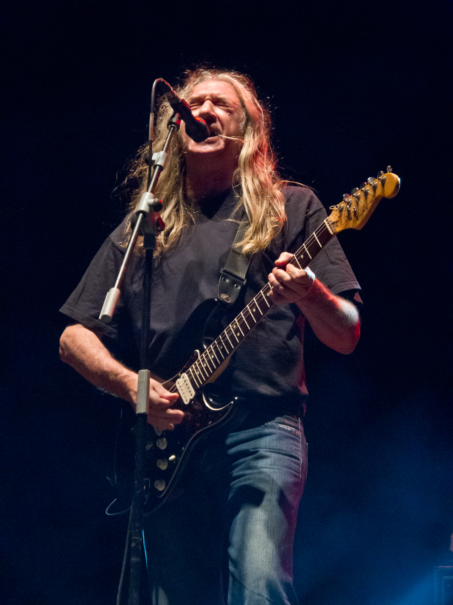
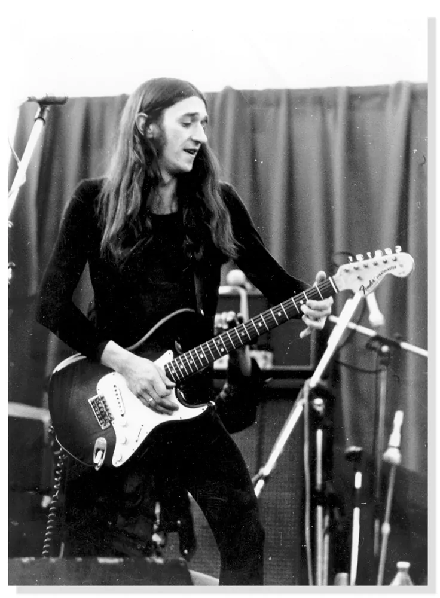

Rosendo Mercado Ruiz
Voz y guitarra (1985 - 2018)

Biografía ampliada
Rosendo Mercado Ruiz (Madrid, 23 de febrero de 1954) es el icono indiscutible del rock español. Nacido y criado en el barrio madrileño de Carabanchel, su música siempre ha estado impregnada de la autenticidad y la rudeza de sus orígenes.
Tras liderar formaciones legendarias como Ñu (1974-1977) y Leño (1978-1983), inició en 1985 una carrera en solitario que lo consolidaría como "el patriarca del rock urbano". Con un estilo directo, letras cargadas de ironía social y una guitarra que suena a asfalto puro, su trayectoria es la columna vertebral de la música rock en castellano.

Carrera musical
- 1974-1977: Miembro fundador de Ñu
- 1978-1983: Líder y compositor de Leño
- 1985: Inicio de carrera en solitario con "Loco por incordiar"
- 2018: Gira de despedida "Mi tiempo, señorías"
Filosofía
"La música es de quien la escucha. Yo solo pongo las notas."
Reconocimientos
En 2018 recibió la Medalla de Oro al Mérito en las Bellas Artes como reconocimiento a su aportación cultural y su influencia en varias generaciones de músicos españoles.